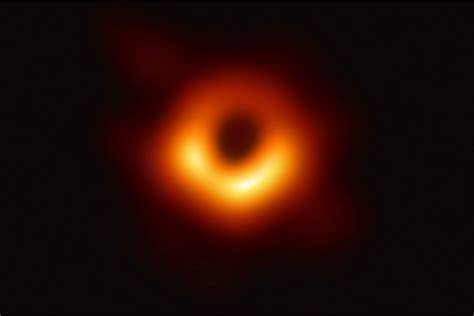
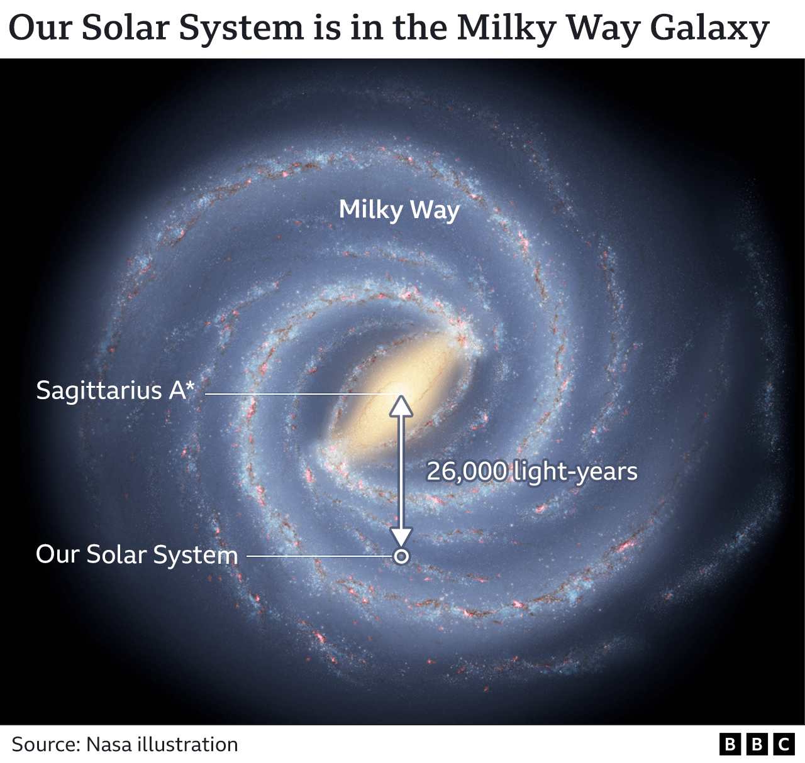
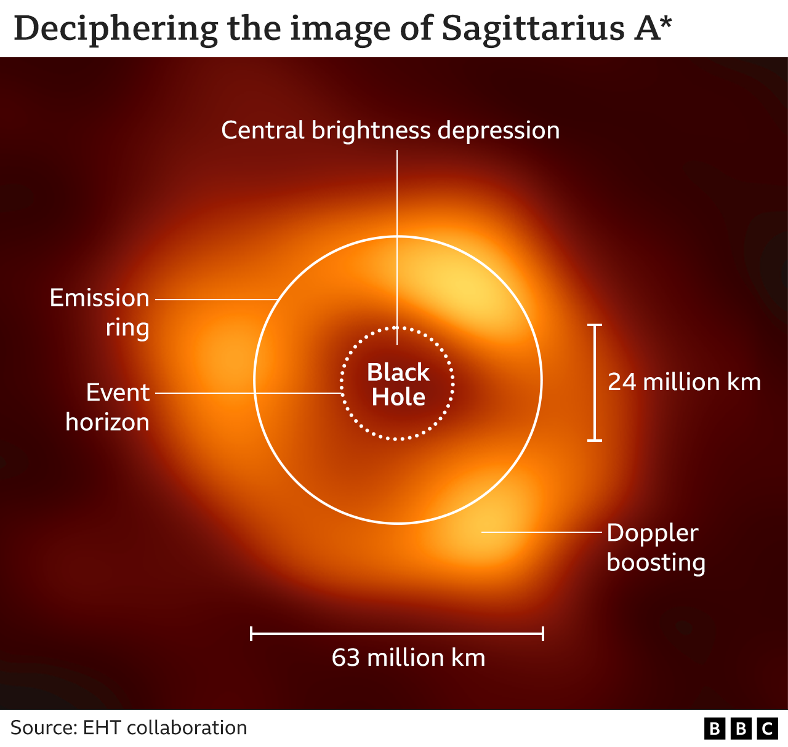

Black hole: First picture of Milky Way monster

Ziri Younsi: "We affectionately term it a doughnut in the collaboration"
This is the gargantuan black hole that lives at the centre of our galaxy, pictured for the very first time.
Known as Sagittarius A*, the object is a staggering four million times the mass of our Sun.
What you see is a central dark region where the hole resides, circled by the light coming from super-heated gas accelerated by immense gravitational forces.
For scale, the ring has diameter of about 60 million km (40 million miles).
To put that in context, Mercury, the innermost planet in our Solar System, orbits between roughly 40 million km and 70 million km from the Sun (or between 25 million miles and 45 million miles).
Fortunately, this monster is a long, long way away - some 26,000 light-years in the distance - so there's no possibility of us ever coming to any danger.
The image was produced by an international team called the Event Horizon Telescope (EHT) collaboration.

It's their second such image after releasing in 2019 a picture of the giant black hole at the heart of another galaxy called Messier 87, or M87. That object was more than a thousand times bigger at 6.5 billion times the mass of our Sun.
"But this new image is special because it's our supermassive black hole," said Prof Heino Falcke, one of the European pioneers behind the EHT project.
"This is in 'our backyard', and if you want to understand black holes and how they work, this is the one that will tell you because we see it in intricate detail," the German-Dutch scientist from Radboud University Nijmegen told BBC News.
What is a black hole?
A black hole is a region of space where matter has collapsed in on itself
The gravitational pull is so strong that nothing, not even light, can escape
Black holes will emerge from the explosive demise of certain large stars
But some are truly huge and are billions of times the mass of our Sun
How these monsters - found at galaxy centres - formed is unknown
But it's clear they energise the galaxy and will influence its evolution
Presentational grey line
The picture is a technical tour de force. It has to be.
At a distance of 26,000 light-years from Earth, Sagittarius A*, or Sgr A* for short, is a tiny pinprick on the sky. To discern such a target requires incredible resolution.
The EHT's trick is a technique called very long baseline array interferometry (VLBI).
Essentially, this combines a network of eight widely spaced radio antennas to mimic a telescope the size of our planet.

The mass of a black hole determines the size of its accretion disc, or emission ring. The hole lives in the central brightness depression. Its "surface" is called the event horizon, the boundary inside which even a light-ray is bent back on itself by the curvature in space-time. Brighter regions in the accretion disc are where light gains energy as it moves towards us, and is said to be doppler boosted
This arrangement enables the EHT to cut an angle on the sky that is measured in microarcseconds. EHT team members talk about a sharpness of vision akin to being able to see a bagel on the surface of the Moon.
Even then, atomic clocks, smart algorithms and countless hours of supercomputing are needed to construct an image from several petabytes (1 PB equals one million gigabytes) of gathered data.
The way a black hole bends, or lenses, light means there is nothing to see but a "shadow", but the brilliance of the matter screaming around this darkness and spreading out into a circle, known as an accretion disc, betrays where the object is.
If you compare the new image to the previous one of M87, you may wonder what's different. But there are key distinctions.
"Because Sagittarius A* is a much smaller black hole - it's around a thousand times smaller - its ring structure changes on timescales that are a thousand times faster," explained team member Dr Ziri Younsi from University College London, UK. "It's very dynamic. The 'hotspots' you see in the ring move around from day to day."